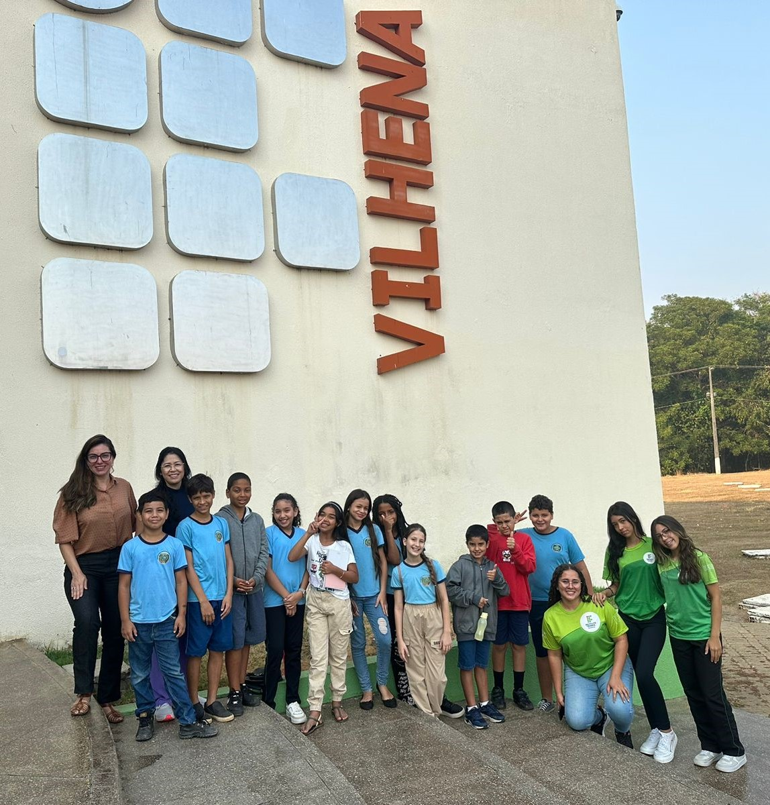

Informática Basica
Nesse projeto é monitorado pelos professores Aremilson, Maria Helena, Douglas e a Dejane entre outros colaboradores.
No projeto estamos ensinando as crianças sobre a informática basica, as crianças tem uns 10 anos, eles estudam na escola Castelo Branco
As crianças são uns amores, eles prestam muita atenção.
Esse projeto tem a duração até a segunda semana de Dezembro.
O que seria informática básica?
Informática Básica você irá começar a compreender as tecnologias básicas de uso comum como os chamados pacotes Office,
assim como entender a evolução da tecnologia até nossos dias atuais agregando o conhecimento básico necessário para trabalhar com as
modernas ferramentas disponíveis no mercado.
Informática é a denominação dada a um grupo de conhecimentos relacionados à coleta, manipulação, armazenamento, transmissão e
processamento de informação por computadores.

O que se estuda em informática básica?
Compreender os componentes e funções básicas de um computador; Aprender como utilizar a Área de Trabalho, navegar, pesquisar, baixar arquivos na Internet;
Conhecer os principais programas do Windows e características dos editores de texto e, por fim.
Aprender boas práticas para navegação segura na internet.
Uns dos conceitos básicos mais importantes
Compreender a diferença entre os conceitos de software e hardware é fundamental. O termo hardware se refere a todos os itens físicos de um dispositivo, ou seja,
tudo aquilo que pode ser tocado.Teclado, mouse, monitor, placa de vídeo, memória e placa-mãe e as demais peças que compõem um computador, tablet ou smartphone são hardware.
Já o software diz respeito a aspectos que não são físicos, como o sistema operacional e os programas instalados na máquina.
=======Informática Básica
Nesse projeto é monitorado pelos professores Aremilson, Maria Helena, Douglas e a Dejane entre outros colaboradores.
No projeto estamos ensinando as crianças sobre a informática basica, as crianças tem uns 10 anos e estudam na escola Castelo Branco.
As crianças são uns amores, elas prestar muita atenção.
O que seria informática básica?
O que é Com a Informática Básica você irá começar a compreender as tecnologias básicas de uso comum como os chamados pacotes Office, assim como entender a evolução da tecnologia até nossos dias atuais agregando o conhecimento básico necessário para trabalhar com as modernas ferramentas disponíveis no mercado.
>>>>>>> 8ab816a084519a5a81624e30bbf3fbb9696d9531